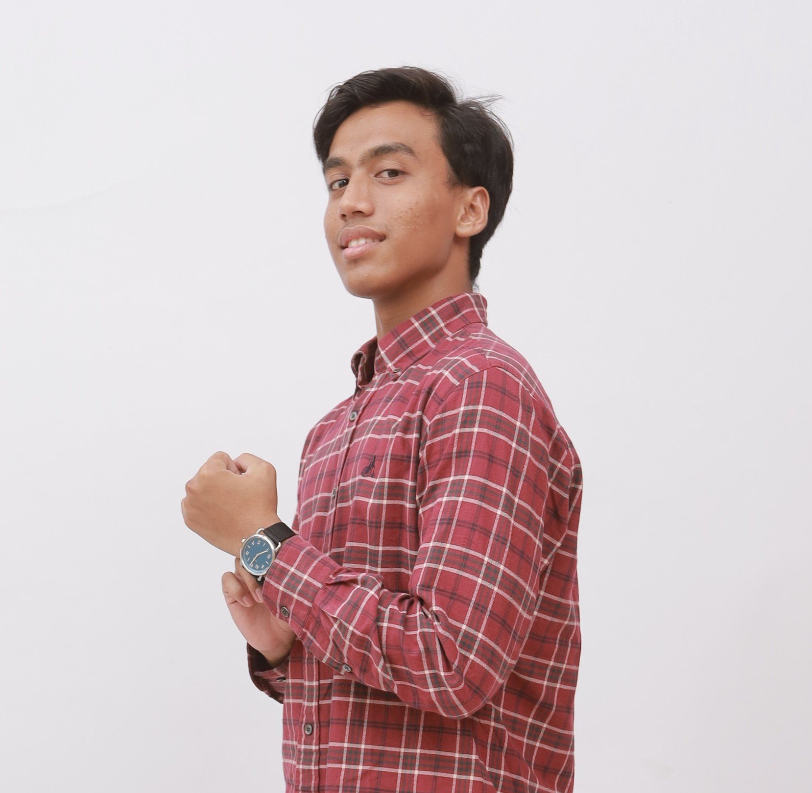

Media Production Staff at ITS Camp 2026
August 2026
Created multimedia assets for the ITS Camp 2026 event. Ensured an enjoyable and memorable experience for all participants.

Informatics Student | Front-End Developer & Videographer
English, Indonesian, Arabic, Mandarin
Detail-oriented Informatics student at Institut Teknologi Sepuluh Nopember (ITS) with a strong foundation in full-stack web development, competitive programming, and embedded systems engineering. Proficient in building modern web applications with Next.js, React, and TypeScript, alongside low-level C++ algorithm optimization, GDB debugging, and microcontroller development. Experienced in end-to-end multimedia production—including advanced color grading and motion graphics—with hands-on hardware operation across Sony FX30 and audio capture setups. Demonstrates strong analytical problem-solving skills, active technical project leadership, and adaptability across both software systems and media workflows.
August 2026
Created multimedia assets for the ITS Camp 2026 event. Ensured an enjoyable and memorable experience for all participants.
October 2025
Studied electric vehicle development for FSAE competition. Designed and implemented an embedded low-voltage system according to competition specifications and safety regulations.
November 2025
Prepared necessary equipments and facilities for the event. Managed inventory and hardware setup before, during, and after the event.
Informatics
Science
Embedded Systems, Software Development, and Cinematography